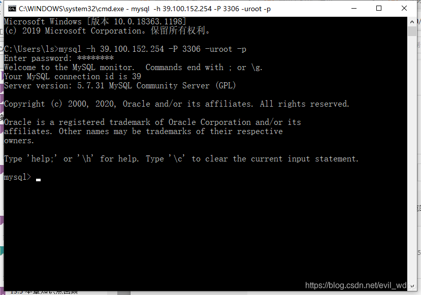

一、检查系统环境
1、检查Centos版本
[root@iZ8vb5ha9qczjmh83yzk6zZ ~]# cat /etc/redhat-release
CentOS Linux release 8.2.2004 (Core)
2、检查是否安装过MySQL
[root@iZ8vb5ha9qczjmh83yzk6zZ ~]# systemctl status mysqld.service
Unit mysqld.service could not be found.
Unit mysqld.service could not be found.
显示系统没有安装过MySQL,检查一下my.cnf配置文件，发现没有配置文件
[root@iZ8vb5ha9qczjmh83yzk6zZ ~]# find / -name my.cnf
[root@iZ8vb5ha9qczjmh83yzk6zZ ~]#
[root@iZ8vb5ha9qczjmh83yzk6zZ ~]#
二、下载并安装MySQL
1、下载MySQL官方的Yum Repository
[root@iZ8vb5ha9qczjmh83yzk6zZ ~]# wget -i -c http://dev.mysql.com/get/mysql57-community-release-el7-10.noarch.rpm

2、安装Yum Repository
[root@iZ8vb5ha9qczjmh83yzk6zZ ~]# yum -y install mysql57-community-release-el7-10.noarch.rpm

3、安装MySQL
安装时报错，All matches were filtered out by modular filtering for argument: mysql-community-server
Error: Unable to find a match: mysql-community-server
解决办法：先执行 yum module disable mysql，然后再执行yum -y install mysql-community-server
Error: Unable to find a match: mysql-community-server
解决办法：先执行 yum module disable mysql，然后再执行yum -y install mysql-community-server
4、卸载Yum Repository
由于每次 yum 操作都会自动更新，需要把这个卸载掉
[root@iZ8vb5ha9qczjmh83yzk6zZ ~]# yum -y remove mysql57-community-release-el7-10.noarch

三、配置MySQL
1、查看MySQL状态
[root@iZ8vb5ha9qczjmh83yzk6zZ ~]# systemctl status mysqld.service
2、启动MySQL
[root@iZ8vb5ha9qczjmh83yzk6zZ ~]# systemctl start mysqld.service
3、登录MySQL
此时MySQL已经开始正常运行，不过想要登录MySQL还得先找出此时root用户的密码
[root@iZ8vb5ha9qczjmh83yzk6zZ ~]# grep "password" /var/log/mysqld.log
临时密码是iIn>yP=iE1&q
[root@iZ8vb5ha9qczjmh83yzk6zZ ~]# mysql -uroot –p
Enter password:iIn>yP=iE1&q
Enter password:iIn>yP=iE1&q

必须修改默认密码之后才能操作数据库，密码设置必须包含大小写字母、数字和特殊字符，不然修改密码失败
mysql> ALTER USER 'root'@'localhost' IDENTIFIED BY 'MySQL%57';
四、开启MySQL远程访问
执行以下命令开启远程访问限制（注意：下面命令开启的是%代表所有用户，如要开启某一个IP，用IP代替%）
mysql> grant all privileges on *.* to 'root'@'%' identified by 'MySQL%57' with grant option;
执行刷新命令
mysql> flush privileges;
五、在防火墙中添加3306端口
[root@iZ8vb5ha9qczjmh83yzk6zZ ~]# firewall-cmd --zone=public --add-port=3306/tcp –permanent
防火墙没有运行
启动防火墙
启动防火墙
[root@iZ8vb5ha9qczjmh83yzk6zZ ~]# systemctl start firewalld
查看防火墙状态
[root@iZ8vb5ha9qczjmh83yzk6zZ ~]# systemctl status firewalld
重新添加端口，成功
六、修改配置文件
登录MySQL，输入status，发现服务器的字符编码是latin1

需要将字符编码修改为utf8
修改配置文件my.cnf
查找my.cnf所在目录
修改配置文件my.cnf
查找my.cnf所在目录
[root@iZ8vb5ha9qczjmh83yzk6zZ ~]# find / -name my.cnf
进入文件后，新增以下四行代码
[client]
default-character-set=utf8
character-set-server=utf8
collation-server=utf8_general_ci
[client]
default-character-set=utf8
character-set-server=utf8
collation-server=utf8_general_ci
保存my.cnf后，重启MySQL
[root@iZ8vb5ha9qczjmh83yzk6zZ ~]# systemctl restart mysqld.service
登录MySQL，查看status，可以看到字符集编码已经成功修改为utf8
七、远程测试
阿里云ECS服务器需要添加安全组规则，开启3306端口才可以远程连接MySQL
在本地Windows下远程连接MySQL，连接成功

使用Navicat测试，连接成功